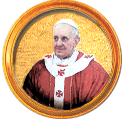
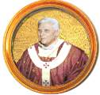

Inicio
Sobre EPCA…
Canales y Videos Católicos
▾
Milagros eucarísticos
Noticias
Temas de Fe
Catecismo
El Rosario
Catecismo
Todos los documentos y temas relacionados
Sumos Pontífices

Francisco

Benedicto XVI
Juan Pablo II